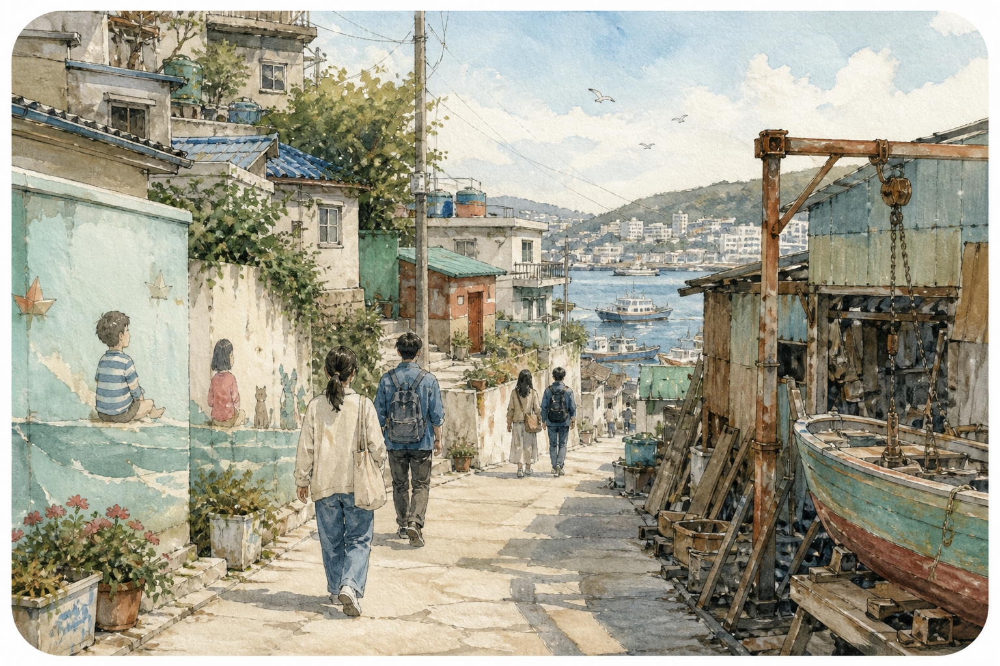

미드나잇 네이비 & 블루
심야 부산 앞바다의 지성적인 고요와 달빛 물결.
“어떤 길은, 걸음보다
시선이 먼저 도착한다.”
미드나잇 네이비 & 블루 테마 선택됨
CITY HEART × LOCAL ART
부산 원도심과 해안 골목을 배경으로, 장소의 기억과 창작자의 이야기를 엮는 로컬 인문학 저널리즘 & 에디토리얼 매거진.
LOC.TORIAL 방문 새 창골목에 남은 시간,
사람에게서 시작되는 이야기.
계절의 분위기와 세 가지 시선을 선택해보세요.
색이 바뀌면, 도시를 읽는 감각도 달라집니다.
심야 부산 앞바다의 지성적인 고요와 달빛 물결.
“어떤 길은, 걸음보다
시선이 먼저 도착한다.”
미드나잇 네이비 & 블루 테마 선택됨
네 개의 메인 탭으로 이어지는
록토리얼의 새로운 읽기 경험.
역사·에디터·아티스트 퀵 스위처로 앱 배경과 테마를 바꾸고, 볼륨 에디션을 고릅니다.
커버 그리드 · 완독 시간 · 탐방 거리부산 원도심 지도와 장소 기반 서가에서 다음 이야기를 발견합니다.
성좌 필터: 역사 · 골목 · 바다 · 책방로컬 크리에이터의 1인 서재와 작업실을 만나고, 창작자의 시선에 머무릅니다.
나무문 내비게이션 · 능동형 무드 바선택한 테마의 색을 이어받아 나만의 에디션을 세 단계로 엮습니다.
관점 & 제목 → 여행지 & 수필 → 검토 & 발행영도·보수동·전포동을 주제로 한 구성 예시입니다.
실제 발행 에디션이나 최신 앱 캡처가 아닙니다.

YEONGDO영도 · 산업의 흔적과 사람의 기억을 읽는 관점
보수동 · 읽는 사람과 오래된 서가의 이야기
전포동 · 로컬 창작자의 취향을 따라 읽는 장면
에디션 커버 방향 예시 · 일러스트 및 타이포그래피 구성
도시의 심장과 로컬 창작자의 예술적 시선.
일곱 가지 무드가 그 교차점을 연결합니다.
CITY HEART × LOCAL ART